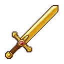
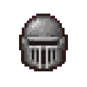
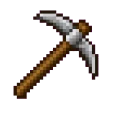
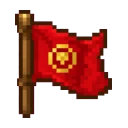

ProgressãoProgression
XP e níveisXP & levels
De onde vem o XP, quanto cada coisa dá e quanto falta para o próximo nível. Todos os números abaixo são os padrões do mod e podem ser mudados no RPG Skills Config. Where XP comes from, how much each thing gives and how much you need for the next level. All numbers below are the mod's defaults and can be changed in RPG Skills Config.
Curva de níveisLevel curve
Cada nível pede 10.000 XP a maisEach level needs 10,000 XP more
Para sair do nível N e chegar ao próximo, você precisa de 10.000 × N XP: 10 mil no nível 1, 500 mil no nível 50, 1,69 milhão no nível 169. O nível máximo é 170, que dá exatamente os 170 pontos das 34 classes.
To go from level N to the next, you need 10,000 × N XP: 10k at level 1, 500k at level 50, 1.69 million at level 169. Max level is 170, exactly the 170 points of the 34 classes.
Todo XP é arredondado para múltiplos de 5. Ao subir de nível, aparecem fogos de artifício (dá para desligar). All XP is rounded to multiples of 5. Level-ups come with fireworks (can be turned off).
- Nível 1 → 2Level 1 → 210.000
- Nível 100 → 101Level 100 → 1011.000.000
- Total até o nível 170Total to level 170143.650.000
Fontes de XPXP sources
Quase tudo rende XPAlmost everything gives XP

InimigosEnemies
Cada inimigo dá o XP da zona onde ele está: de 15 na floresta até 105 no Ferro-velho. Veja a tabela abaixo.Each enemy gives the XP of the zone it is in: from 15 in the forest up to 105 in the Scrapyard. See the table below.

Mini-chefes e chefesMini-bosses & bosses
Mini-chefe: XP da zona +100. Chefe: 300 + 100 a cada 10 níveis seus (no nível 100, 1.300 XP).Mini-boss: zone XP +100. Boss: 300 + 100 per 10 of your levels (1,300 XP at level 100).

MundoWorld
Minerar, plantar, colher e pescar dão 5 XP por ação.Mining, farming, harvesting and fishing give 5 XP per action.

VilaSettlement
Colonos trabalhando rendem XP para o dono: 5 por tarefa, 5 a 15 por recrutamento. Limite de 150 XP por minuto (o Mestre dos Reinos no nível 5 triplica as tarefas).Working settlers earn XP for the owner: 5 per task, 5 to 15 per recruit. Capped at 150 XP per minute (Realm Master level 5 triples tasks).
Bônus de XPXP buffs
A Loja vende bônus de 2x, 5x e 10x por 10 minutos. Só um fica ativo por vez. Ver preços.The Shop sells 2x, 5x and 10x buffs for 10 minutes. Only one at a time. See prices.
IncursõesIncursions
As incursões são as zonas mais fortes do mod: de 75 XP (Slime) a 105 XP (Ferro-velho) por inimigo. Combine com um bônus de XP no fim de jogo.Incursions are the mod's strongest zones: from 75 XP (Slime) to 105 XP (Scrapyard) per enemy. Pair them with an XP buff in the endgame.
XP por zonaXP per zone
Quanto mais fundo, mais XPThe deeper, the more XP
XP base de cada inimigo comum, por zona. Mini-chefes somam +100.Base XP of each regular enemy, per zone. Mini-bosses add +100.
| ZonaZone | TipoType | XP |
|---|
Morrer custa XPDying costs XP
Ao morrer, você perde 25% do XP que já juntou no nível atual. Você nunca cai de nível. A penalidade pode ser desligada ou mudada na configuração.When you die, you lose 25% of the XP gathered in your current level. You never drop a level. The penalty can be turned off or changed in the config.
XP em equipeTeam XP
Jogadores do mesmo time num raio de 24 blocos dividem o XP de combate em partes iguais. O XP da vila também pode ser dividido. Tudo isso pode ser ligado, desligado e ajustado.Players on the same team within 24 tiles split combat XP equally. Settlement XP can be shared too. All of this can be toggled and tuned.
CalculadoraCalculator